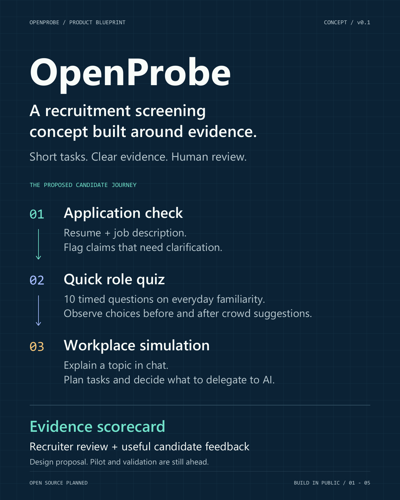
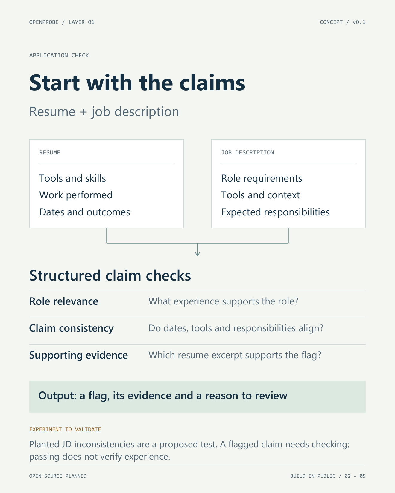
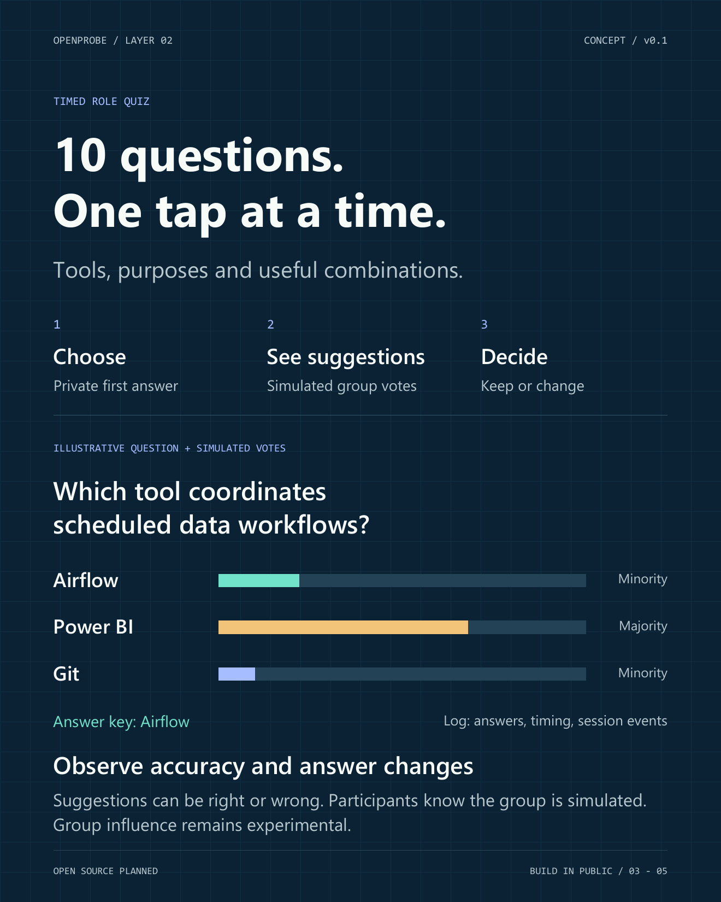
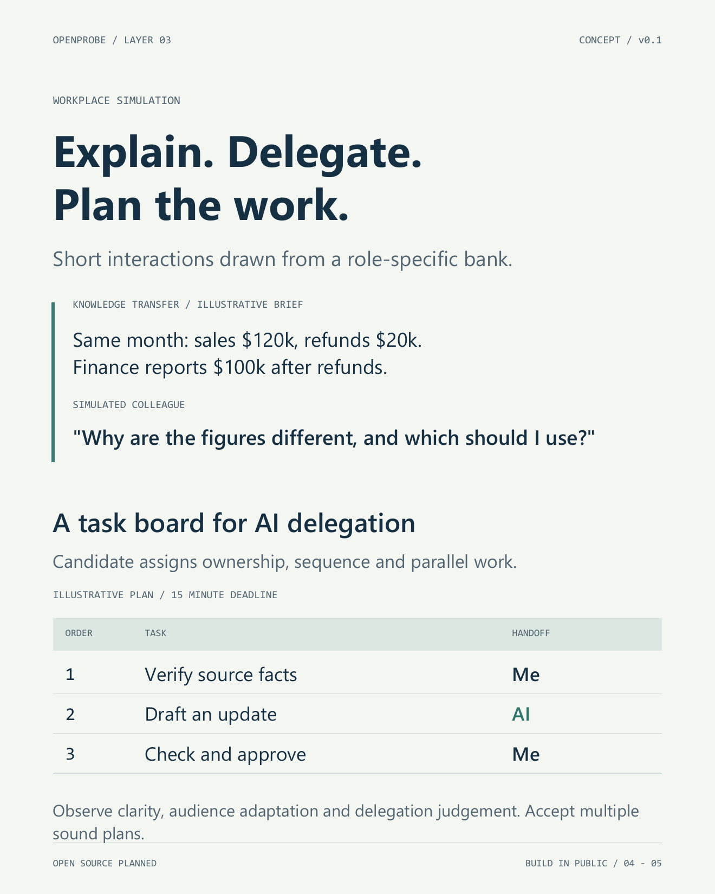
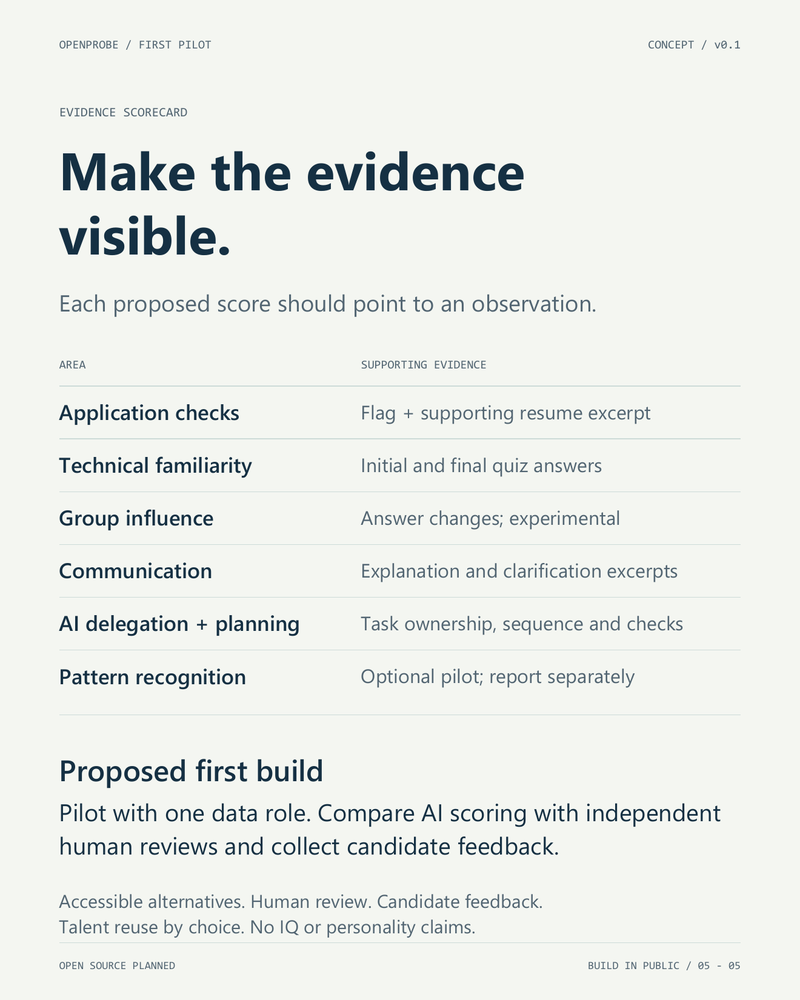

Build in Public, Day 1: Introducing OpenProbe
OpenProbe is a working name for a recruitment screening tool I’m designing in public.
The goal is to give applicants a straightforward way to show their knowledge, communication and judgement, while giving recruiters evidence they can inspect.
It’s at the blueprint stage. I plan to build it publicly, share the decisions behind it and eventually release it as open source. This post is Day 1 of that series.

The problem I want to work on
A resume summarises someone’s experience, and it’s written to persuade someone else to consider them for a role. It’s a good starting point, but it leaves important questions unanswered.
How familiar is this person with the tools they list? Can they explain their work to someone outside their field? Do they know which tasks to hand to AI, and which AI outputs need checking?
AI makes these questions more interesting. It can help an experienced applicant describe their work clearly. It can also help someone write convincing claims they can’t back up.
I want OpenProbe to look at the experience and judgement behind an application through a short, practical screening process.
Keeping that process simple matters. An assessment that asks for long essays or hours of unpaid work just adds another burden for applicants. It should give people a fair chance to show what they can do.
The current design has three layers.
Layer 1: Checking the application

The process starts with a resume and a job description.
AI would line up the candidate’s claims against the role requirements and highlight statements that need clarifying. Examples include inconsistent dates, unlikely experience timelines, or responsibilities that clash with other parts of the application.
Every flag should point to the exact wording and explain the concern.
One experimental idea is to plant a few deliberate inconsistencies in a job description and see whether applicants repeat them as their own experience. The hypothesis is that careless copying might give itself away through one specific contradictory claim.
That idea needs testing. Someone who avoids the planted inconsistency hasn’t automatically shown expertise. A flagged claim might simply need clarifying, and it doesn’t prove anyone made something up on purpose.
This layer helps a reviewer find questions worth asking. Passing a consistency check doesn’t prove a resume is genuine.
Layer 2: Everyday familiarity through a quick quiz

The second layer is a timed session of ten short questions.
The questions come from a standard bank for the role and test everyday recognition: what a tool does, which tools usually work together, or which action fits a familiar situation.
A data role might include recognising Airflow as a workflow orchestration tool, or knowing how dbt and BigQuery fit together. Other roles would get questions about their own work.
The candidate picks an answer and moves on. The questions should be clearly worded and every option should be believable.
Timing adds context to whether an answer was right. It can’t prove nobody got outside help, and a session interruption doesn’t automatically mean cheating.
There’s also an experimental group-influence element.
On selected questions, the candidate answers privately first. Then they see suggestions from a simulated group, and they’re told the group is simulated. Sometimes the group favours the right answer and sometimes a wrong one. The candidate can keep their answer or change it.
That shows whether they held a correct answer, dropped one, or fixed an earlier mistake.
These are behaviours we can observe. Whether they’re useful evidence for hiring is something the pilot needs to find out, because sticking firmly to an answer isn’t automatically good judgement.
Layer 3: Communication and AI delegation

The third layer is a workplace simulation built from short interactions.
The first activity is about passing knowledge on to a simulated colleague.
The candidate gets the underlying facts and then explains them to someone with a different level of subject knowledge. The challenge is to be accurate and clear at the same time.
Illustrative example: the briefing says a dashboard reports $120k in sales for the month before refunds, while the finance report shows $100k after $20k of refunds. The simulated colleague asks why the figures differ and which one they should use.
The candidate replies in short messages. Follow-up questions and misunderstandings give them chances to clarify.
We’d look at whether they keep the facts right, pitch the language at the right level, and adjust when the first explanation doesn’t land.
The second activity uses a task board to look at AI delegation and how the work is sequenced.
The candidate gets a small set of role-specific tasks, a goal and a deadline. They decide which tasks to do themselves, which to hand to AI, and which AI outputs need review.
They can also set dependencies and mark work that can run in parallel.
The assessment considers whether the plan is workable and includes the right checks. More than one arrangement can be sensible.
This is where using AI well becomes part of the work itself. A candidate might let AI write a first draft while keeping responsibility for checking the claims and approving what goes out.
Scenarios would vary by role. An accounting scenario might involve a reconciliation and an explanation for a stakeholder. A marketing scenario might involve a campaign update. The scoring guide would reflect the responsibilities being assessed.
An evidence scorecard

The output is a scorecard backed by the candidate’s actual responses and actions.
A reviewer should be able to open the answer behind a technical familiarity score, the conversation behind a communication rating, and the task plan behind an AI delegation assessment.
Candidates should also get feedback on what they showed and where the evidence was thin.
I’m considering short pattern-recognition exercises as an optional extra. They would be reported separately and never presented as an IQ score.
Over time, reusable assessment evidence could help candidates be considered for other suitable roles. That would need to keep the context of the original task, and it would be the candidate’s choice whether their information is kept and shared.
The first pilot
The proposed starting point is one data role, a small question bank and one workplace scenario.
Independent human reviewers would assess the same responses, and then their judgements would be compared with the AI-generated scores. I also want to know how long the experience takes, where candidates get stuck in the interface, and whether the feedback is useful.
Every activity has to earn its place. If a feature adds effort without producing useful evidence, that’s a reason to change it or remove it.
The recruiter stays responsible for interpreting the evidence and making the hiring decision.
Why share it this early
These decisions deserve scrutiny before they turn into product features. I’ll share progress, and what I change along the way, as the pilot takes shape.
If you recruit, manage a team or apply for roles, I’d love your view: what would make this experience useful enough to be worth a candidate’s time?
Download the OpenProbe blueprint (PDF). Follow along or open an issue on GitHub.
Outside my day role I also build NBA analytics on NoFlightZone. More posts are at travisjohn.github.io.